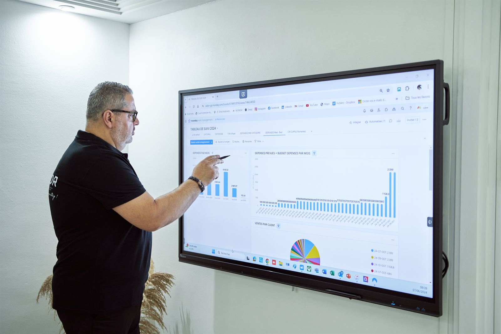

Le Plan de marche : vos prix, votre marge, votre stock et vos ventes
Celui que vous vendez le plus et celui qui vous rapporte le plus, ce n'est presque jamais le même. Sur trois mois, on trace la route : ce que vous vendez vraiment, ce que chaque gamme doit rapporter, jusqu'où vous pouvez descendre vos prix, ce qui dort en rayon, et où mettre votre effort de vente.
- Trois mois
- Cinq chantiers, dans l'ordre
- Des scénarios chiffrés en euros

Les cinq chantiers
-
Ce que vous vendez vraiment, et à qui
Les trois familles de produits qui vous font vivre, et celles qui vous coûtent. Même lecture pour vos clients. Une page, à partir de votre caisse.
-
Ce que chaque gamme doit rapporter
Si vous deviez faire 10 % de plus l'an prochain, vous les prendriez où ? Quand la réponse est « partout », c'est un espoir, pas un objectif. Un objectif par gamme et par type de clients, en euros et en quantités, avec deux ou trois scénarios chiffrés.
-
Vos prix et vos remises
Votre grille de prix et de remises, avec le prix plancher de chaque article et, pour chaque remise, le volume qui la compense. Fret, octroi de mer et temps en rayon compris.
-
Ce qui dort en rayon, ce qui manque
La liste de ce qui dort, de ce qui tourne et de ce qui manque, avec le geste pour chaque article : mettre en avant, déstocker, commander.
-
Où mettre votre effort de vente
Le plan des actions de vente de la saison, chacune avec sa cible et sa mesure, décidée avant. Une action qu'on ne mesure pas est une dépense.
Calculer un prix de vente juste, octroi de mer compris
En Guadeloupe, un article ne coûte pas ce qu'affiche la facture du fournisseur. Avant la première vente, il faut payer le fret, l'assurance, l'octroi de mer et le transit. C'est ce coût de revient, rendu en magasin, qui sert de base au prix de vente et à la marge.
| Un article | Montant |
|---|---|
| Prix du fournisseur | 50 € |
| Fret et assurance | 7 € |
| Octroi de mer | 5 € |
| Transit | 3 € |
| Coût de revient rendu en magasin | 65 € |
| Prix de vente | 100 € |
| Marge | 35 € |
Ici, une fois les frais payés, l'article revient à 1,3 fois son prix d'achat : c'est le coefficient d'approche. Il change d'une famille de produits à l'autre, selon le fournisseur, le transport et le taux d'octroi de mer. On le calcule pour chacune de vos familles.
Taux de marge ou taux de marque : la confusion qui coûte cher
Les deux taux partent des mêmes 35 €. Le taux de marque les compare au prix de vente : 35 sur 100, soit 35 %. Le taux de marge les compare au coût de revient : 35 sur 65, soit 53,8 %.
Le piège : vous voulez « 40 % de marge » et vous ajoutez 40 % au coût de revient. Vous vendez alors 91 €, et il ne vous reste que 26 €, soit 28,6 % du prix de vente. Sur toute une gamme, l'écart se chiffre vite en milliers d'euros.
Ce que coûte vraiment une remise
Sur ce même article, une remise de 10 % ramène le prix à 90 € et la marge à 25 €. Pour gagner autant qu'avant, il faut vendre 40 % d'articles en plus. C'est ce volume qui compense la remise, et c'est lui qu'on vérifie avant de l'accorder.
Ce que vous gardez
- La page de ce que vous vendez vraiment, et à qui.
- Un objectif par gamme et par type de clients, avec deux ou trois scénarios chiffrés.
- Votre grille de prix et de remises, avec le prix plancher de chaque article.
- La liste de votre stock : ce qui dort, ce qui tourne, ce qui manque, et le geste pour chacun.
- Le plan de vos actions de vente, chacune avec sa cible et sa mesure.
Ce sont les étapes 5 à 9 de la méthode ADAM BOARDS™. Elles s'appuient sur Le Point de Départ, et Le Suivi mensuel les fait vivre ensuite.
Le tarif
Le tarif du Plan de marche est publié sur adamboards.fr, le site de la méthode.
Voir le tarif sur adamboards.frQuestions fréquentes
Quelle différence entre taux de marge et taux de marque ?
Les deux partent de la même marge en euros. Le taux de marque la compare au prix de vente, le taux de marge la compare au coût d'achat. Un article qui revient à 65 € et se vend 100 € laisse 35 € : 35 % de taux de marque, 53,8 % de taux de marge.
Comment intégrer l'octroi de mer dans son prix de vente ?
On calcule d'abord le coût de revient rendu en magasin : prix du fournisseur, fret et assurance, octroi de mer, frais de transit. C'est sur ce coût, et non sur le prix du fournisseur, que se calculent la marge et le prix de vente.
Jusqu'où peut-on accorder une remise ?
Jusqu'au prix plancher, et à condition de savoir quel volume la compense. Sur un article vendu 100 € qui laisse 35 €, une remise de 10 % ne laisse plus que 25 € : il faut vendre 40 % de plus pour garder la même marge.
Trente minutes pour lire vos chiffres
Pour vous, ou pour un dirigeant que vous connaissez. Au bureau à Baie-Mahault, chez vous ou à distance.
- Téléphone0690 55 89 88
- WhatsAppÉcrire un message
- Mailcontact@cador-gp.com